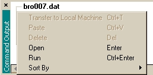

Two types of commands are supported for Remote: common Windows
commands, and ASAP commands.
Common Windows commands for the server are supported in Remote.
Right-click in the Explorer view of the
Command Output window for a list of available commands, as
illustrated below:

Note: Files generated on remote computers are available only for the
duration of a session, and are automatically deleted upon ending the session.
If you need to retain the files, transfer them to your computer before ending
the session by right-clicking in the Command Output window, and clicking
Transfer to Local Machine.